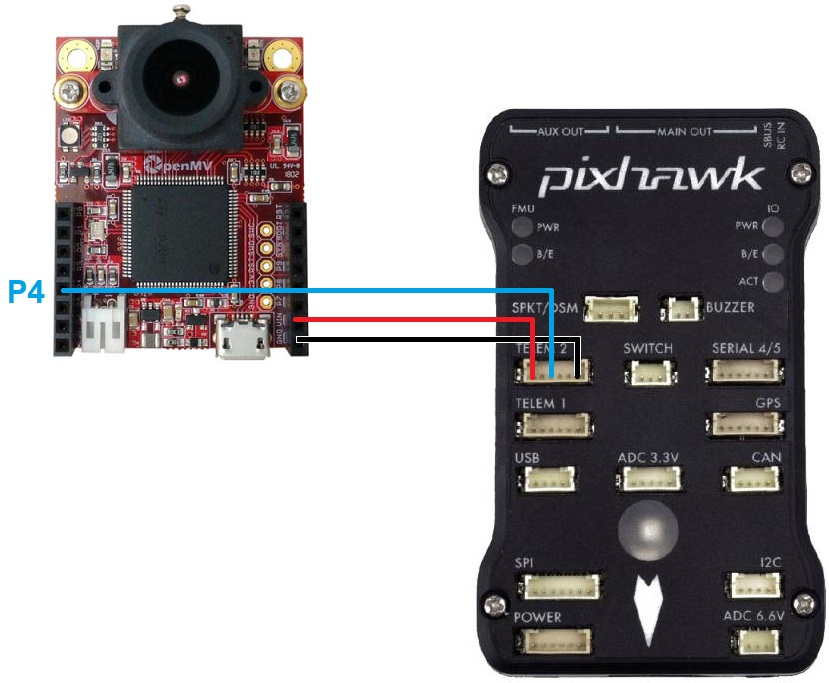

OpenMV for Optical Flow¶
[copywiki destination=”copter,plane,rover”]
The OpenMV camera is a programmable camera which includes support for optical flow.
Where to Buy¶
The sensor can be purchased directly from openmv.io
Connection to Autopilot¶
{kind=link}
The camera should be mounted on the underside of the copter with the camera lens pointing downwards. The camera edge with the lens should be towards the front of the vehicle. The image above is incorrect because the autopilot’s arrow is pointing down while the sensor’s lens is close to the top
Connect the camera’s P4, VIN and GND pins to one of the autopilot’s serial ports as shown above. In the image above the sensor is connected to a Pixhawk’s Telem2 port
Set FLOW_TYPE = 5 (MAVLink)
Set SERIAL2_PROTOCOL = 1 (MAVLink) if using Serial2/Telem2, if connected to another serial port use the corresponding SERIALx_PROTOCOL parameter
Set SERIAL2_BAUD = 115
Note
Official pinout for the camera can be found here
{kind=link}
Camera Setup¶
Official setup information can be found here but the short form is:
Connect the OpenMV camera to your computer. On Windows the camera should appear as a new COM port and a virtual drive should also be created (this is where scripts are copied to below)
Select File, Examples, 18-MAVLink, mavlink_opticalflow.py
On the bottom right, select the Drive that corresponds to the OpenMV camera’s virtual drive
Select Tools, save open script to OpenMV Cam
Select Tools, Reset OpenMV Cam
A green light on the camera should begin flashing which shows the script is running
{kind=link}
Additional Notes¶
As with the PX4Flow sensor a range finder is required to use the sensor for autonomous modes including Loiter and RTL
FlowHold does not require the use of a rangefinder
The sensor has been successfully tested to altitudes of about 10m
Performance can be improved by setting the sensors position parameters. For example if the sensor is mounted 2cm forward and 5cm below the frame’s center of rotation set FLOW_POS_X to 0.02 and FLOW_POS_Z to 0.05.
Testing and Setup¶
See Optical Flow Sensor Testing and Setup for setup guides.
Note that recommended value for EK2_FLOW_DELAY or EK3_FLOW_DELAY for this sensor is 80.